원하는 매물을 살펴보세요.
중개소 전체 매물 395
주력 단지부터 주변 단지, 그 밖의 등록 매물까지 한곳에서 살펴보세요.
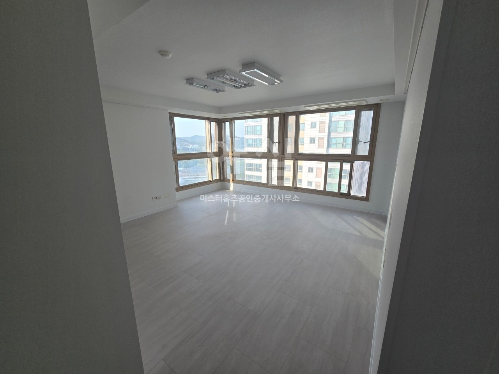
해당 매물 사진아늑하고 쾌적한 2클러스터 32타입 25년 5월 올 리모델링 완
실거주 선호도 높은 4Bay 정문 인근 생활 편리한1클러스터 44타입
햇살 좋고 전망 좋은 2클러스터 41타입 아이 키우기 좋은 학세권 동
4클러스터 41타입 남동향 탕정초 탕정중 마운트사계절뷰
즉시입주 가능 2클러스터 41타입 햇살 좋은 남동향 잔디광장 전망뷰
즉시입주 가능 번잡함없이 조용한 생활환경 원하는 가정에 추천
401동 1호 32타입 등하교 편한 클 초중등 자녀 키우시는 가정에 추천
햇살좋은 남동향 2클러스터 41타입 인기 많은 맞통풍 구조
2클러스터 58타입 채광 조망 굿 가장 조용한 주거환경 원하시는 분께 딱
조용하고 쾌적한 2클러스터 남동향 44타입 막힘없이 탁 트인 전망
트라팰리스 최신 로얄동 5클 47타입 아늑하고 채광 좋은 정원뷰
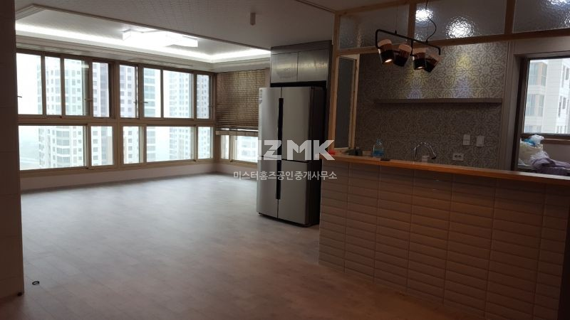
해당 매물 사진2클러스터 47타입 리모델링 완 직주 근접, 학세권 모두 갖춘 집
조용하고 쾌적한 2클러스터 44타입 남동향 일조, 조망 모두 좋은 집
단지 중심 3클러스터 남동향 51타입 풀에어컨 관리 잘된 깨끗한 집
5클러스터 로열층 오후 내내 따뜻한 남서향 세대분리형 3룸 구조 40타입
2클러스터 47타입 자연스럽고 막힘없는 경관 아늑하고 쾌적한 집
3클러스터 58타입 2세대 분리거주 가능 구조 확 트인 편안한 뷰
2클러스터 43타입 뷰 맛집 잔디광장, 가락소류지 산책로 공원 영구조망권
창을 열면 따뜻한 햇살뷰 문을 열면 수영장,사우나. 거주 만족도 굿
5클러스터 41타입 남동향 맞통풍구조 탁 트인 뷰 안방 방음공사 완료세대
2클러스터 넓은 44타입 막힘없이 탁 트인 전망의 햇살 좋은 집
1클러스터 41타입 고층 부럽지 않은 탁 트인 전망
4클러스터 전면동 40타입 탕정중 교사가 훤히 보이는 편안한 뷰
학군, 생활 편의성 모두 만족시키는 단지 중심 3클러스터 남동향 34타입
2클러스터 58타입 대형 평형 3년 전 인테리어 관리 잘된 깨끗한 집
상권 슬세권 단지 초입 1클러스터 47타입 안락한 지중해마을뷰
가슴 뚫리는 파노라마 뷰 상쾌한 아침 햇살 품은 5클러스터 47타입
5클러스터 수납공간 넉넉한 32타입 임차인 승계 매매
생활 편리한 단지 중심 3클러스터 43타입 전망, 조망 모두 좋은 집
즉시입주 가능 햇살 좋고 전망 좋은 로얄동 5클러스터 41타입
탁 트인 전망 햇살과 바람이 거니는 판상형 맞통풍구조 4클러스터 41타입
5클러스터 47타입 탁 트인 시원한 뷰 상권 슬세권 세입자 승계 매매
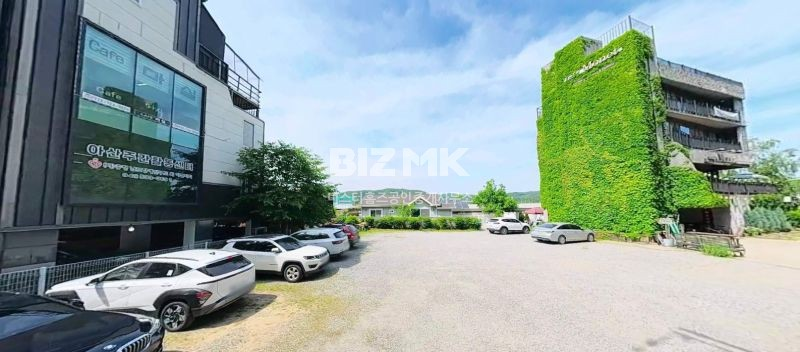
해당 매물 사진곡교천 은행나무길 주거, 근생용도변경, 상업신축까지 완벽한 부지
삼성디스플레이 인근 1층 상가 임대 넓은 면적, 주차10대 이상 가능
삼성전자 온양반도체 인근 실개천공원뷰 창터지구 아파트 예정부지 바로 앞
4클러스터 학세권속 힐링 공원조망 47타입 자녀 키우시는 가정에 추천
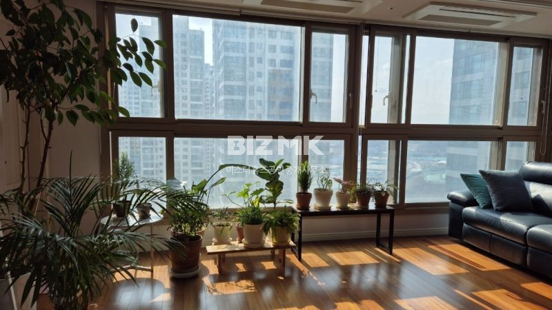
해당 매물 사진단지 중심 3클러스터 남서향 44타입 햇살 가득 전망 좋은 따뜻한 집
조용하고 아늑한 4클러스터 41타입 앞,뒤 뻥 뚫린 쾌적한 맞통풍 구조
1클러스터 47타입 정문 인근 상권 접근성 좋고 진출입 편한 위치
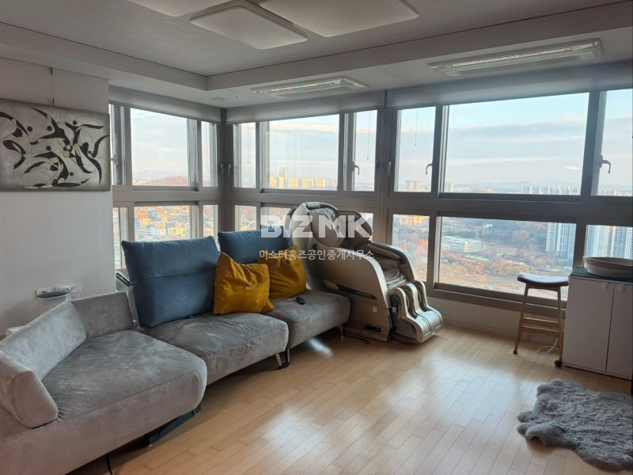
해당 매물 사진4클러스터 47타입 조망전망 최고라인 학세권, 직주 근접 모두 갖춘 집
2클러스터 남서향 47타입 로얄동 로얄라인 인테리어 세대, 풀 에어컨
아이 키우기 좋은 4클러스터 남서향 34타입 초, 중학교 등하교 편리
2클러스터 32타입 학교 전망 뻥뷰 조용하고 쾌적한 생활환경 협의입주
4클러스터 중심 속 누리는 초록빛 힐링 뷰 대형 47타입
시원한 맞통풍과 남동향 탁트인뷰 2클러스터 41타입 세입자 승계 매매
보증금 2,000만원 월 140만원 안정적인 임대수익형 매물
즉시입주 2클러스터 44타입 풀에어컨,전동빨래,전기쿡탑 시원한 뻥뷰
302동 5호라인 43타입 단지 중심 로얄동 로얄층 빠른 입주 협의가능
단지 중심 선호동 3클러스터 50타입 풀 에어컨,도배,방충망 교체
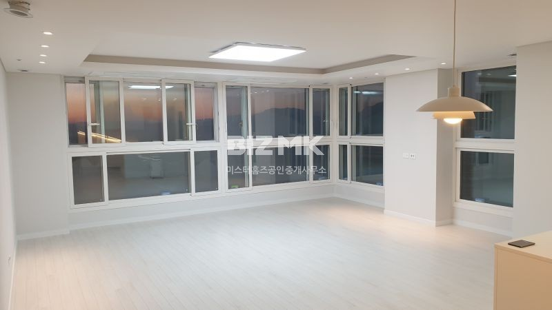
해당 매물 사진지중해마을 뻥뷰 3클러스터 58타입 손 댈 필요없는 깨끗한 집 풀 에어컨
2클러스터 41타입 보증금 2.9억 27년 6월 이후 입주 가능
화사한 남동향 햇살 가득한 3클러스터 판상형 선호도 최상 34타입
2클러스터 남동향 4베이구조 34타입 조용하고 쾌적한 생활환경
4클러스터 학세권 로얄입지 속 개방감 최상 막힘없는 파노라마뷰 47타입
트라팰리스 최신 로얄동 5클러스터 인기 많은 41타입 햇살 좋은 남동향
2클러스터 47타입 잔디광장, 설화산 조망의 아름다운 석양노을 뷰
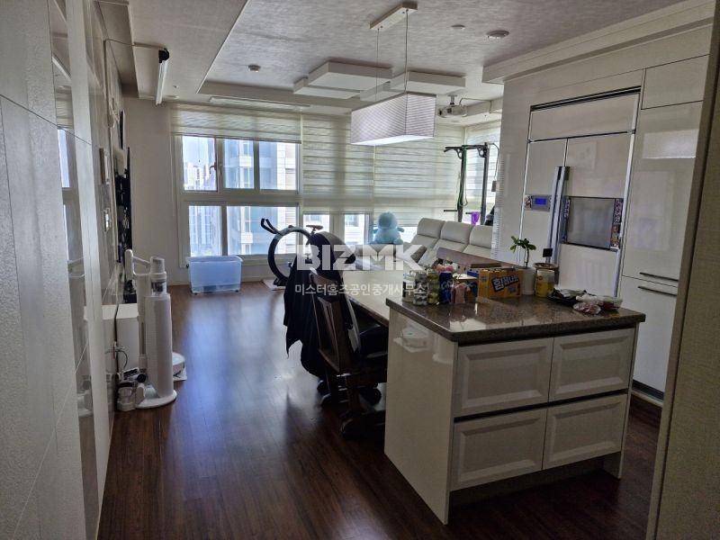
해당 매물 사진인기 많은 선호동 5클러스터 40타입 햇살 좋은 남서향 생활 편리한 위치
2클러스터 44타입 올리모델링 완 풀 에어컨 관리 잘된 깨끗한 집
1클러스터 32타입 잔디광장뷰 정문 인근 진출입, 주차 편리한 동
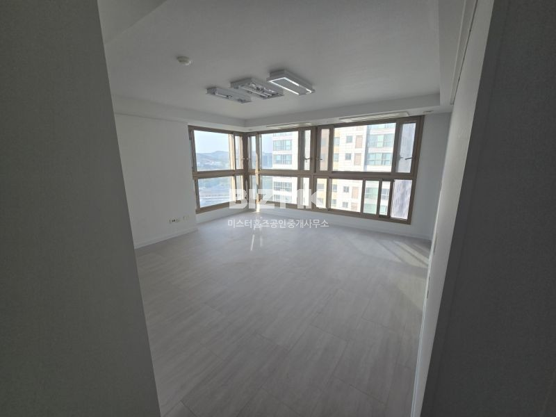
해당 매물 사진2클러스터 32타입 25년 5월 화이트톤 올 리모델링 손 댈 필요없는 집
두 창 가득 햇살이 감도는 2면 개방 뷰 2클러스터 43타입
탕정초탕정중 방면 막힘없는 시원한 전망 4클러스터 전면동 30타입
2클러스터 58타입 층간소음 걱정없는 대형 평형 다자녀가정에 추천
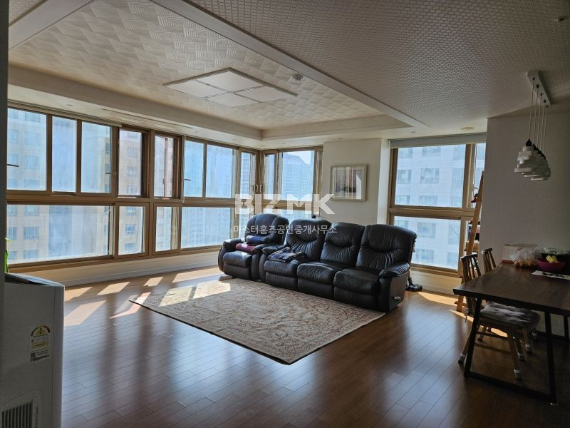
해당 매물 사진조용하고 쾌적한 2클러스터 58타입 화이트 인테리어 시스템에어컨 교체 완
2클러스터 44타입 편안한 뷰 삼성고.충남외고 초 근접 엘베 4대
오후의 따스한 햇살이 머무는 곳, 5클러스터 40타입 3룸 구조
1클러스터 41타입 남동향 맞통풍구조 막힘없이 탁 트인 편안한 뷰
2클러스터 41타입 남동향 판상형 구조 잔디광장 가락소류지산책로 뷰
온기 가득한 남동향 햇살과 품격 있는 공간 2클러스터 44타입
2클러스터 앞동 34타입 조용하고 안락한 생활환경을 원하시는 분들께 추천
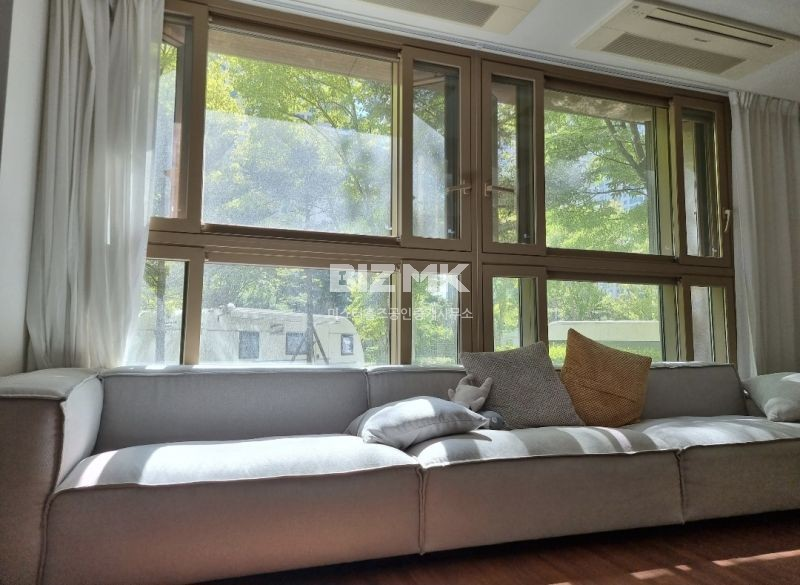
해당 매물 사진2클러스터 41타입 단독주택같은 남동향 햇살뷰 노유자 가정에 적극 추천
아침 햇살과 바람이 거니는 남동향 4Bay 1클러스터 44타입
3클러스터 34타입 화이트톤 인테리어 세입자 승계 매매
즉시입주 가능 바람과 편안함이 머무는 2클러스터 4베이구조 34타입
아이 키우기 좋은 4클러스터 32타입 어린 자녀 키우시는 가정에 추천
1클러스터 41타입 남동향 4Bay 판상형 구조 막힘없이 탁 트인 뷰
5클러스터 인기 많은 47타입 탁 트인 시원한 뷰 상권 슬세권
충남 최고 학군 트라팰리스 4클러스터 47타입 자녀 키우시는 가정에 추천
반세권, 학세권, 생활 편의시설 모두 갖춘 트라팰리스 5클러스터 32타입
5클러스터 중앙공원 전망 파노라마 뷰 2면개방 타워형 34타입
4클러스터 41타입 층간소음 걱정없고 초,중학교 등교 편리한 집
잔디광장 뷰 201동 2호라인 47타입 에어컨 풀교체, 욕실1리모델링
4클러스터 40타입 중앙공원 전망 아이 키우기 최상의 환경
5클러스터 34타입 보증금 2.2억 27년 10월경 실 입주 가능
최신 로얄동 5클러스터 40타입 일조, 조망 모두 좋은 남동향 뻥뷰
5클러스터 2면개방 타워형 40타입 두 창 가득 빛이 담기는 공간
4클러스터 남동향 40타입 탕정중 탕정초 전망 시원한 뷰
4클러스터 30타입 햇살 좋고 전망 좋은 남동향 탕정중 학사 뷰
추천 남동향 일조량 풍부하고 전망 좋은 뻥뷰 2클러스터 넓은 44타입
정문과 커뮤니티가 가까운 편리함 최신 로얄동 5클러스터 판상형 34타입
3클러스터 따스한 남동향 햇살과 탁 트인 조망을 품은 펜트급 66타입
남서향 채광 우수. 25년 에어컨 풀교체 3클러스터 58타입
5클러스터 쾌적입지 실수요 최적 대형 47타입 부분인테리어 실링팬
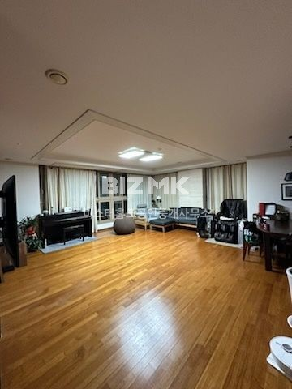
해당 매물 사진협의입주 단지 중심 3클러스터 66타입 대형평형 확 트인 잔디광장뷰
아침햇살과 시원한 전망이 머무는 2클러스터 남동향 58타입
지중해상권, 스벅 스세권 1클러스터 41타입 세입자 승계 매매
최신 로얄동 5클러스터 거실이 환한 40타입 중앙정원뷰
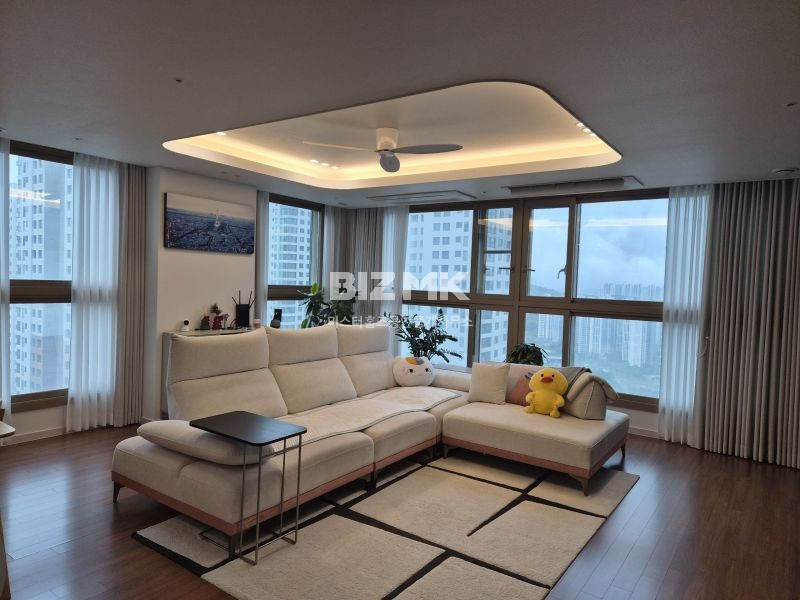
해당 매물 사진2클러스터 남동향 44타입 시스템에어컨 풀교체 주방, 거실 리모델링 완
201동 5호라인 공간 활용하기 좋은 47타입 조망, 전망 모두 굿
따스한 남동향 햇살과 넓은 공간을 품은 집 2클러스터 41타입
생활 편리한 1클러스터 34타입 25년 풀 에어컨 교체, 도배 완
2클러스터 41타입 남동향 햇살 좋은 잔디광장 생태계류원 뷰
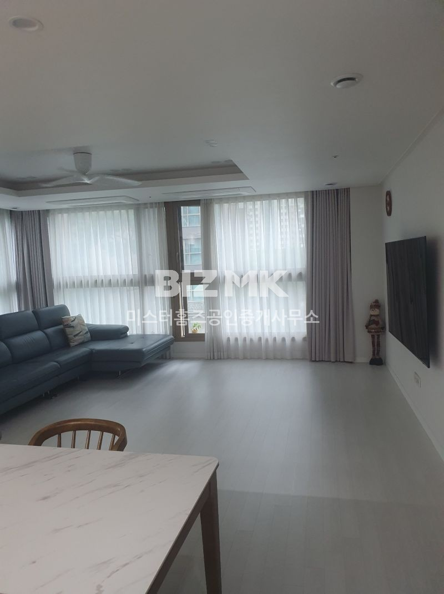
해당 매물 사진3클러스터의 쾌적함 속 풀수리 세대 에어컨, 공조기 교체 완료 44타입
4클러스터 남서향 47타입 확 트인 등산로 전망, 탕정중학교 조망권
햇살 좋고 전망 좋은 5클러스터 41타입 맞통풍구조 안방방음공사 완
보증금 3.6억 실 투자금 6,000만원 소액으로 시작하는 아파트 투자
3클러스터 남서향 44타입 넓고 푸른 잔디광장 뷰 풀에어컨
5클러스터 30타입 정문 인근 생활 편리하고 채광, 전망 모두 좋은 집
봉명동 사무실 및 창고 2개 건물 소규모 사옥 및 복지, 근린시설로 추천
탕정테크노 산업단지 배후 투자용 토지. 미래가치 높은 성정관리계획구역
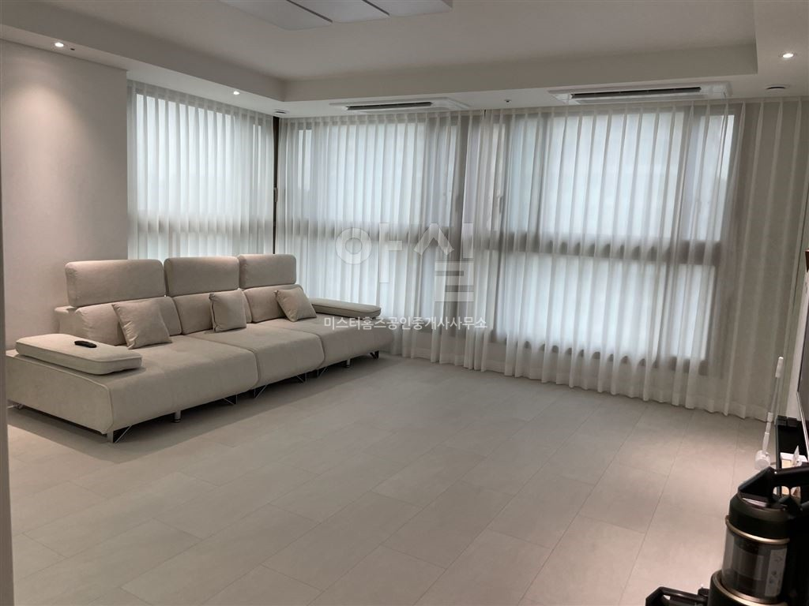
해당 매물 사진깔끔한 화이트톤 인테리어 3클러스터 34타입 세입자 승계 매매
4클러스터 47타입 남동향 중앙공원뷰 바로 앞 놀이터, 학교도 가까운 집
4클러스터 고층 남동향 4베이구조 30타입 탁 트인 시원한 뷰
5클러스터 47타입 방4개 구조 남동향 아늑하고 채광 좋은 정원뷰
생활의 중심 3클러스터 43타입 풀에에컨 교체 완 부분인테리어 가벽 철거
인테리어 완 방 3개 구조 넓고 확 트인 4클러스터 47타입
트라팰리스 생활의 중심 3클러스터 남동향 인기 좋은 51타입
아이 키우기 좋은 4클러스터 남서향 34타입 채광 굿 전망 굿
2클러스터 남향 41타입 인기평형 부분리모델링 학세권 직주 근접
학세권동 4클러스터 남서향 34타입 햇살 좋은 집
202동 중앙라인 남동향 4베이구조 34타입 햇살 좋고 전망 좋은 집
2014년 완공 최신동 인기 많은 5클러스터 32타입 고층 미래초 배정
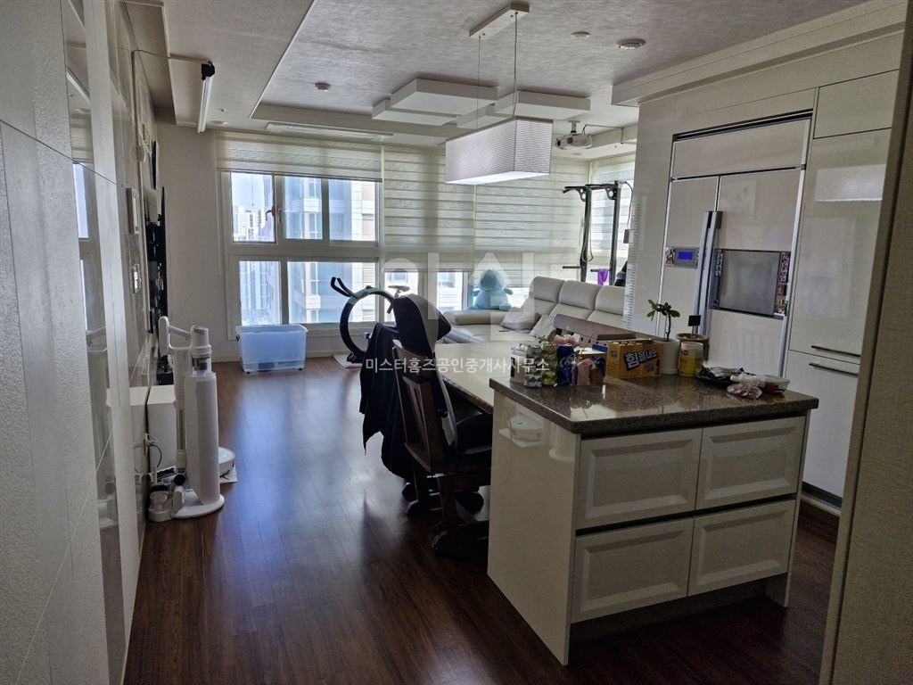
해당 매물 사진5클러스터 40타입 조망, 채광, 편리한 생활환경 모두 갖춘 집
탁 트인 전망 속 따스한 노을빛이 물드는 집 1클러스터 타워형 32타입
4클러스터 34타입 초,중학교 등하교 편리, 방 2개 확장, 큰 방 추천
2클러스터 44타입 가락소류지산책로 전망 확 트인 뷰 맛집
2클러스터 50타입 설화산과 온양도심이 환히 보이는 펜트하우스급 전망
탁 트인 조망과 따스한 온기가 길게 머무는 집 5클러스터 34타입
3클러스터 66타입 햇살 좋은 남향 지중해마을 뷰 맛집 인테리어 완
2클러스터 44타입 올리모델링 완 특수난방필름 결로방지페인트 풀어에컨
막힘없는 학교 전망 선호도 높은 판상형 4클러스터 30타입
어린 자녀 키우기 좋은 4클러스터 41타입 여유롭게 준비 가능한 집
5클러스터 쾌적한 로얄입지 풍부한 채광 우수 남서향 실용적 구조 34타입
탁 트인 조망 매일 아침 밝은 햇살 가득한 4클러스터 판상형 30타입
2클러스터 44타입 편안한 벚꽃산책길뷰. 삼성고.충남외고 초 근접
넉넉한 공간에 더해진 따스한 노을 빛 3클러스터 58타입
학세권 최고입지 4클러스터 47타입 햇살이 깊게 머무는 아늑한 집
최신 로얄동 5클러스터 40타입 탁 트인 전망, 편리한 생활환경
조용한 일상 속, 가족만의 시간을 누릴 수 있는 2클러스터 44타입
남서향 우수한 채광 여유로운 구조 5클러스터 47타입
두정동 노른자위 대형 부지 통합 개발의 기회 명품입지로 완성하는 가치
2클러스터 47타입 탁 트인 잔디광장뷰 풀 에어컨, 인테리어 완
2클러스터 남서향 43타입 학교 전망 막힘없이 탁 트인 안락한 뷰
4클러스터 32타입 남서향 충남외고뷰 자녀 키우시는 가정에 추천
곡교천 은행나무길 프리미엄 입지
2클러스터 58타입 햇살 좋은 남향 잔디광장 전망 뻥뷰 풀에어컨 교체
2클러스터 34타입 남향 일조, 조망 모두 우수한 집 즉시입주 협의 가능
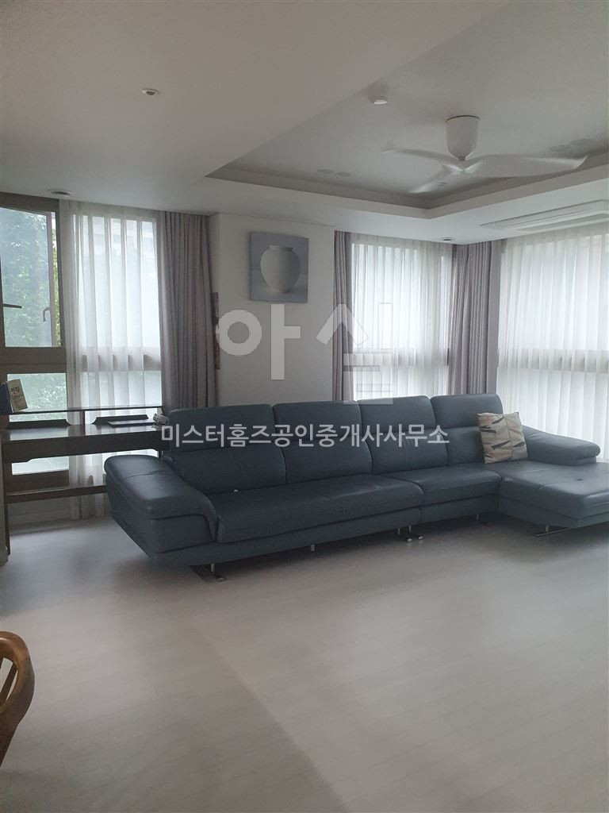
해당 매물 사진손볼 곳 없는 완벽함 풀인테리어, 에어컨,공조기 교체 3클러스터 44타입
차분한 일상이 머무는 실속 공간 3클러스터 34타입
넉넉한 수납과 압도적 공간감 3클러스터 58타입
신불당 핫플레이스 먹자골목 허가득 상가주택용지
4클러스터 40타입 쾌적하고 아늑한 생활환경, 초등, 중등 등하교 편리
직산읍 마정리 도로,하수,전기 설비 완비 공장용지 개발허가,토목공사 완
알찬 수납과 두 창 가득 담기는 파노라마 뷰 4클러스터 32타입
아산신도시 용연마을 허가득 상가주택지
초록빛 편안한 정원뷰 정문 인근 생활 편리한 1클러스터 34타입
채광 우수 쾌적한 주거환경 2클러스터 중앙라인 34타입
KTX천안아산역 아파트인근 상가주택용지
2클러스터 대형 평면 47타입 남서향 탁 트인 가락소류지 산책로 전망
탁 트인 전망과 넉넉한 공간 아침 햇살 가득한 2클러스터 44타입
창너머 초록빛 정원뷰 2클러스터 드레스룸2개 와이드거실 47타입
대형병원예정지 인근 상가주택용지
탕정신도시 곡교천변 공영주차장 옆 상가주택용지
2클러스터 남동향 41타입 맞통풍구조 햇살 좋고 전망 좋은 집
봉명동 쌍용대로변 상업토지 3개 필지 병의원, 대형 쇼핑몰, 식당, 카페
탕정시티프라디움 앞 최상급 입지 상가주택용지
천안상권의 심장부 검증된 골든블록 대로변 상업용 빌딩 신축, 직영
아산신도시 주거단지 3면 코너 상가주택용지
탕정2지구 배후 2026년 대규모 착공 예정지의 프리미엄을 누리세요
남동향 햇살 품은 여유로운4클러스터 41타입 현관, 화장실 리모델링 완
KTX 천안아산역탕정역 인근 한들물빛도시 예미지앞 상가주택용지
201동 4호라인 41타입 푸른 잔디광장 노송뷰 향긋 라인굿 가격굿
생활 편리한 1클러스터 남동향 41타입 남동향 맞통풍 구조
불황에도 끄덕없는 랜드마크입지. 두정역 앞 1번 국도 대로변 토지
아이 키우기 좋은 학세권동 4클러스터 실용적인 구조 34타입
1클러스터 44타입 잔디광장 뷰 단지 초입 생활 편리한 슬세권
바람과 햇살, 전망이 머무는 집 2클러스터 맞통풍구조 41타입
4클러스터 40타입 막힘없이 탁 트인 전망 여유롭게 입주 준비 가능
직산읍 마정리 도로, 하수, 전기 설비 완비 공장용지
201동 5호라인 47타입 남동향 올리모델링 전망,채광,통풍 모두 굿
4클러스터 전면동 30타입 4베이구조 조망 전망 모두 좋은 남동향
탕정신도시 곡교천변 코너 상가주택용지
세대간 프라이버시 우수 2클러스터 여유로운 대형 41타입
은은한 채광 속 확 트인 잔디광장 뷰 1클러스터 32타입
아산시내가 한눈에 펼쳐지는 뻥뷰 인테리어기간 드림 2클러스터 32타입
2클러스터 29타입 전망 최상 위치 1인 가구, 신혼부부 가정에 적극추천
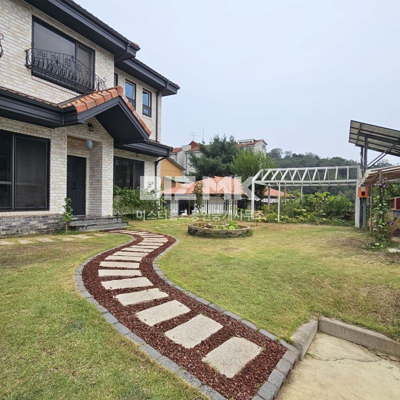
해당 매물 사진곡교천의 여유를 담은 당신만을 위한 안식처 송곡리 전원주택
즉시입주 가능 1클러스터 2면개방 타워형 32타입 탁 트인 파노라마뷰
매곡천 뻥뷰 상가주택용지
4클러스터 32타입 막힘없이 탁 트인 전망, 일조량 풍부한 라인
2클러스터 32타입 학교 전망 뻥뷰 가장 조용하고 프라이빗한 주거 환경
아산역 도보권 주거단지코너 상가주택용지
2클러스터 대형 평형 58타입 전망, 햇살 모두 좋은 남동향 잔디광장 뷰
시스템에어컨 교체, 일부 리모델링 완료 4클러스터 드레스룸2개 47타입
4클러스터 34타입 초중고 등하교 편리 어린 학생 키우시는 가정에 추천
KTX천안아산역 리슈빌 상가주택지
천안역세권 개발의 중심 와촌동 혁신지구의 주인공이 되십시오
트라팰리스 최신 로얄동 5클러스터 41타입 세입자 승계 매매
5클러스터 쾌적함속 명품 공원조망 5클러스터 32타입
명문학세권 속 품격 있는 일상 5클러스터 47타입
두 창 가득 따스함이 피어나는 공간 5클러스터 2면개방 타워형 34타입
트라팰리스 생활의 중심 3클러스터 로얄동 로얄층 위치 좋은 43타입
2면개방 파노라마 뷰 5클러스터 공간감 뛰어난 타워형 40타입
삼성디스플레이 인근 2층 상가 임대 사무실, 교육장 추천
따스한 남동향 햇살과 넉넉함을 품은 집 3클러스터 44타입
4클러스터 전면동 40타입 남동향 햇살 좋고 전망 좋은 집
4클러스터 전면동 40타입 탁 트인 학교 전망 국민주택규모 특례적용평형
최신 로얄동 5클러스터 34타입 임차인 승계 매매
단지의 심장, 가장 프리미엄한 입지 3클러스터 34타입 4베이구조
막힘없는 시원한 전망의 최신 로얄동 5클러스터 남서향 40타입
학교 가까운 4클러스터 남서향 34타입 어린 자녀 키우시는 가정에 추천
보증금 4,000만원 월 150만원 안정적인 임대수익형 매물
탁 트인 잔디광장 뷰 단지 중심 생활 편리한 3클러스터 66타입
두 창 가득 은은한 빛이 스미는 집 4클러스터 2면개방 타워형 32타입
햇살과 바람이 반기는 4클러스터 4베이 판상형 30타입 알찬 수납공간
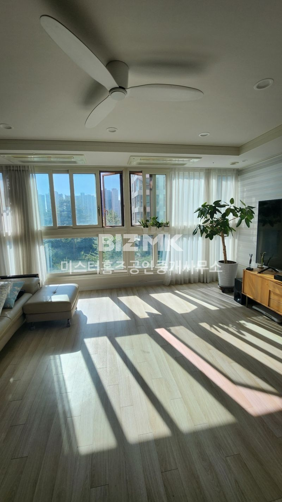
해당 매물 사진바람과 햇살이 머무는 집 부분리모델링 완 실링팬 5클러스터 47타입
3클러스터의 쾌적함 속 품격 있는 삶 프라이빗 대형 66타입
인기매물 4클러스터 41타입 중앙공원이 아늑하게 보이는 남동향뷰
투자가치 뛰어난 센트럴시티 내 알짜 점포주택용지 1층 상가,상층부 주거
504동 2호라인 47타입 남동향 탁 트인 전망, 센터커뮤니티 이용 편리
학세권동 4클러스터 41타입 시원한 고층 뻥뷰 풀 에어컨
탁 트인 전망과 깔끔한 수리 상태 2클러스터 32타입
단지 중심 선호동 3클러스터 50타입 학군, 생활 편의성 모두 갖춘 집
차분한 일상과 탁 트인 개방감이 머무는 곳 5클러스터 34타입
최신 로얄동 5클러스터 공간 활용성 뛰어난 32타입 알짜 매물
5클러스터 40타입 남동향 막힘없이 탁 트인 뷰 여유롭게 준비 가능한 집
학세권동 4클러스터 41타입 맞통풍구조 시원한 뻥뷰
5클러스터 남서향 넉넉한 4베이 대형 47타입
탁 트인 시원한 공원 뷰와 알찬 수납공간 4클러스터 맞통풍구조 41타입
2클러스터 58타입 남서향 햇살 좋고 전망 좋은 대형 평형
5클러스터의 쾌적함과 편리한 라이프 판상형 구조 34타입
조용하고 쾌적한 2클러스터 앞동 34타입 안락한 뷰
탁 트인 안락한 뷰 3클러스터 남서향 58타입 2세대 분리거주 가능 구조
2클러스터 47타입 조용하고 탁 트인 편안한 뷰 주인전세 가능
남동향 햇살과 탁 트인 와이드 거실 맞통풍 구조 2클러스터 41타입
즉시입주 가능 인기 많은 504동 5호라인 41타입 남동향 맞통풍 구조
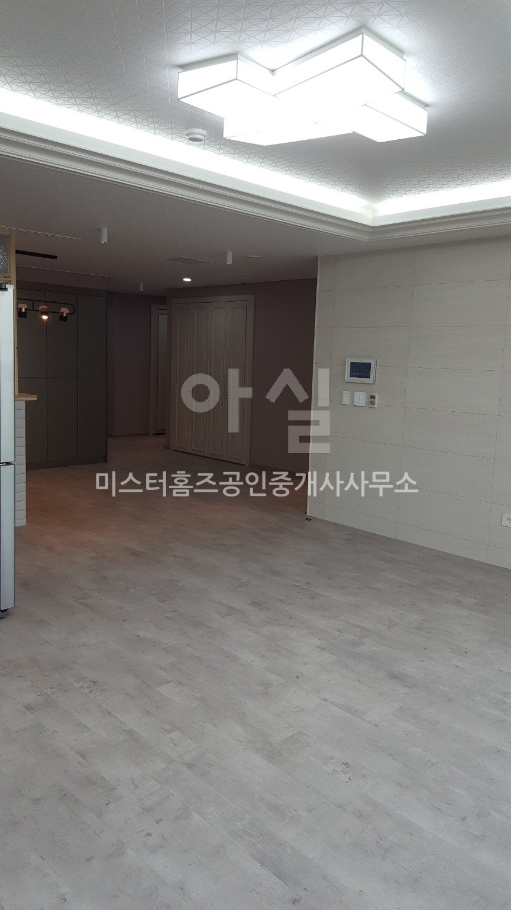
해당 매물 사진리모델링, 아늑하고 조용한 생활환경, 직주근접, 명문 학세권 다 갖춘 집
트라팰리스 생활의 중심 3클러스터 34타입 안정적인 평면의 남동향
아늑하고 쾌적한 2클러스터 남동향 조망, 채광 최상의 41타입
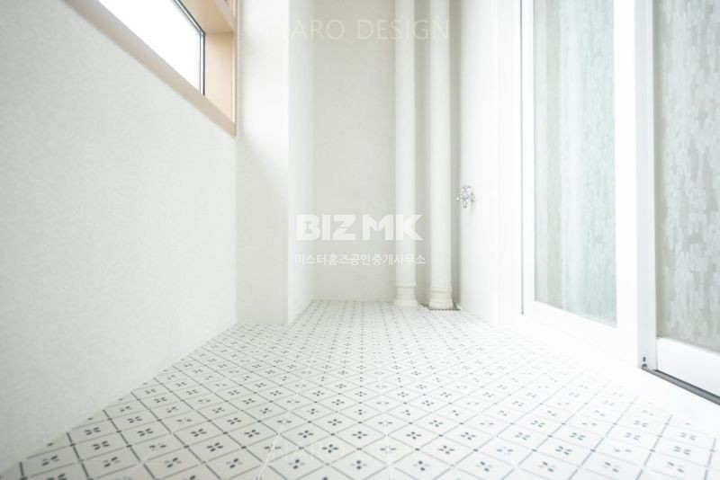
해당 매물 사진품격이 다른 공간감 와이드 거실 4클러스터 로얄입지 47타입
조용하고 쾌적한 2클러스터 58타입 층간소음 걱정없는 집
2클러스터 창을 열면 중앙잔디광장. 문을열면 벚꽃길 가락소류지 산책길
2클러스터 41타입 햇살좋은 남동향 맞통풍구조 삼성고 충남외고 학세권
즉시입주 가능 2클러스터 44타입 학교 전망 조용하고 쾌적한 생활환경
4클러스터 41타입 초,중 가까운 동 앞뒤 전망 시원뷰 맞통풍구조
1클러스터 47타입 안락한 지중해마을뷰 편리한 라이프 상권 스세권
4클러스터 47타입 전망 좋고 햇살 좋은 집 자녀 키우기에 딱
2클러스터 41타입 맞통풍구조 남동향 잔디광장뷰 부분인테리어
4클러스터 41타입 남동향 시원한 뻥뷰 초,중학교 등하교 편리
부분인테리어, 풀에어컨 교체 완 관리 잘 된 3클러스터 43타입
막힘없는 학군 뷰와 햇살 4클러스터 3Bay 판상형 30타입
1클러스터 44타입 남동향 탁 트인 잔디광장뷰 정문 인근 편리한 생활환경
학교 가깝고 바로 앞 공원과 놀이터가 있는 아이 키우기 딱 좋은 집
1클러스터 남동향 44타입 잔디광장뷰 정문 인근 상가 접근성 우수
2클러스터 41타입 남동향 조망 채광 모두 좋은 잔디광장 뷰
2클러스터 귀한 소형 29타입 탁 트인 뷰 맛집 즉시입주 가능
중앙잔디광장 파노라마 조망 3클러스터 34타입
2클러스터 41타입 남동향 안정적인 중앙 잔디광장뷰 협의입주
트라팰리스 최신 로얄동 5클러스터 남동향 47타입 지중해상권 슬세권
3클러스터 58타입 반세권 대단지 단지 중심 위치 대형 평형
2클러스터 44타입 넓은 거실과 넉넉한 수납
리모델링, 아늑하고 조용한 생활환경, 직주근접, 명문 학세권 다 갖춘 집
정문 인근 생활 편리한 1클러스터 41타입 남동향 맞통풍구조 편안한 뷰
1클러스터 47타입 정문 인근 진출입 편리하고 상권 가까운 편리한 위치
탕정호반 대단지 수요와 초등 통학로의 발길을 사로잡는 프리미엄 코너 상가
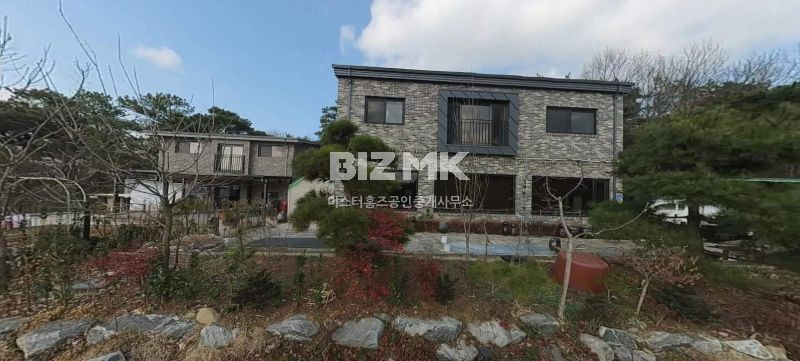
해당 매물 사진외암민속마을 인근 전원형 분위기에 관광수요 확보 주거와 매장 동시에 해결
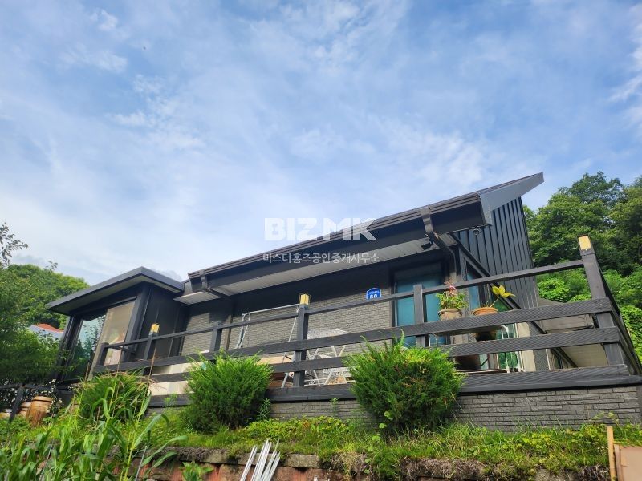
해당 매물 사진아산 염치읍 품격있는 전원형 단독주택 매매
탕정 지중해마을 트라팰리스 정문 앞 1층 노브랜드버거 가맹점주 모집
아산 탕정 갈산리 먹자상권 유망 입지 농협 뒤편 넓은 1층 상가 임대
실수요 강력추천 파크전망 뻥뷰 1클러스터 32타입
아이 키우기 좋은 학세권동 4클러스터 41타입 남동향 시원한 뻥뷰
사계절 아름다운 힐링 산 조망 파노라마 뷰 4클러스터 47타입
햇살 감도는 넓은 거실 올 리모델링 손 댈 필요없는 2클러스터 41타입
실수요 강력추천 파크전망 뻥뷰 1클러스터 32타입
2클러스터 남동향 44타입 풀시스템에어컨 교체. 주방, 거실 리모델링 완
4클러스터 34타입 교육 환경 최강, 학군 프리미엄 클러스터
온 가족이 행복해지는 넓은 공간 2클러스터 47타입
배방월천지구 초핵심 대로변 코너 근린상업지역 토지
개발 가치 높은 성장관리계획구역 알짜 토지
탕정2지구 착공 수혜지. 신불당과 탕정신도시를 잇는 황금입지를 선점하세요
불당중.월봉고 학세권 건축허가 득 상가주택지
도고온천권 희소 상업용 대형 나대지 근생, 상가, 카페, 숙박 개발 가능
4클러스터 남동향 전면동 4베이구조 30타입 여유롭게 준비 가능한 집
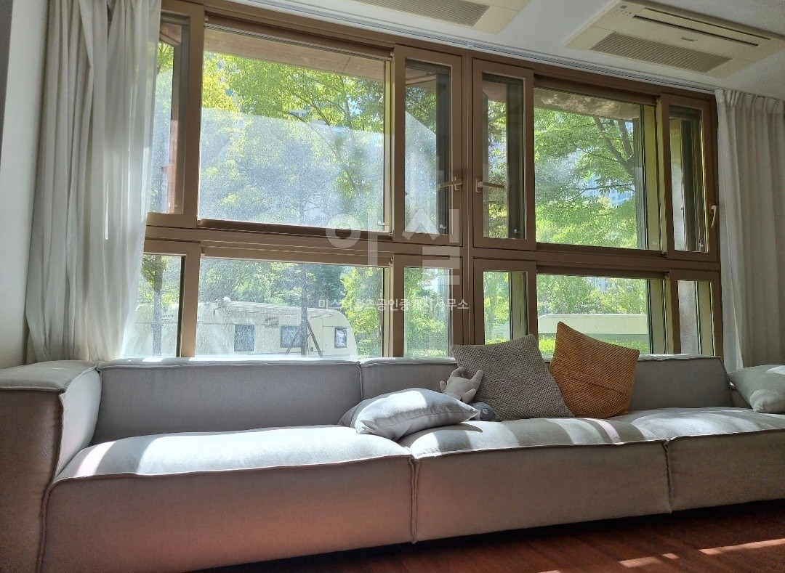
해당 매물 사진햇살좋은 남동향 2클러스터 41타입 진출입 편리하고 층간소음 걱정없는 집
3클러스터 안심 학군 속 편안한 주거 공간 알찬 수납과 실속 구조34타입
아침 햇살이 아늑하게 번지는 남동향 4클러스터 전면동 40타입
403동 1호라인 34타입 자연경관이 멋진 안락한 뻥뷰 통학 출퇴근 편리
1클러스터 41타입 남동향 맞통풍구조, 센터커뮤니티, 상권 이용 편리
3클러스터 44타입 현재 보증금 4.5억 들어있는 알짜매물
2클러스터 32타입 24시 보안팀 상주 아이 키우기 안심되는 트라팰리스
4클러스터 남동향 30타입 4베이구조 귀한 소형 즉시입주 가능
아이의 가능성을 키우기 가장 좋은 자리에서, 가족의 내일을 준비하세요
4클러스터 남서향 34타입 .방2개 구조 확장한 구조 넓은 방 추천
4클러스터 34타입 남서향 산림뷰 아이들이 뛰어놀기 좋은 환경
4클러스터 30타입 전면동 4베이구조 1인 가구 신혼부부 적극추천
아늑하고 쾌적한 생활환경의 2클러스터 32타입 가락소류지, 삼성고 뷰
4클러스터 30타입 남동향 4베이구조 탁 트인 학교 전망
4클러스터 중심 입지 속 고품격 주거 라이프 넉넉한 펜트리 41타입
1클러스터 44타입 센터프라자 커뮤니티 지중해마을상권 대중교통 이용 편리
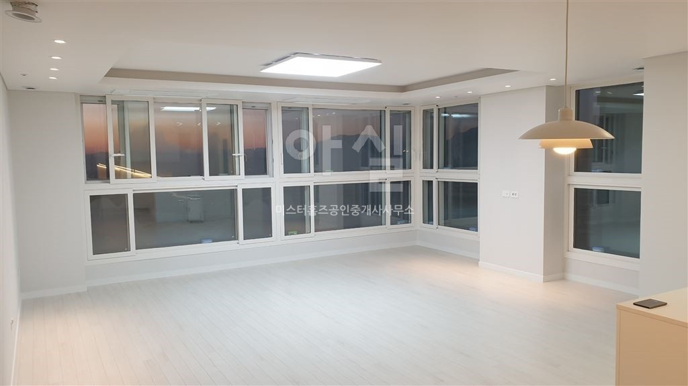
해당 매물 사진3클러스터 남향 58타입 지중해마을 뻥뷰 풀 인테리어 풀 에어컨
아이 키우기 좋은 4클러스터 32타입 막힘없이 탁 트인 학교 전망
아이 키우기 좋은 4클러스터 햇살 좋은 40타입 세재우대평형
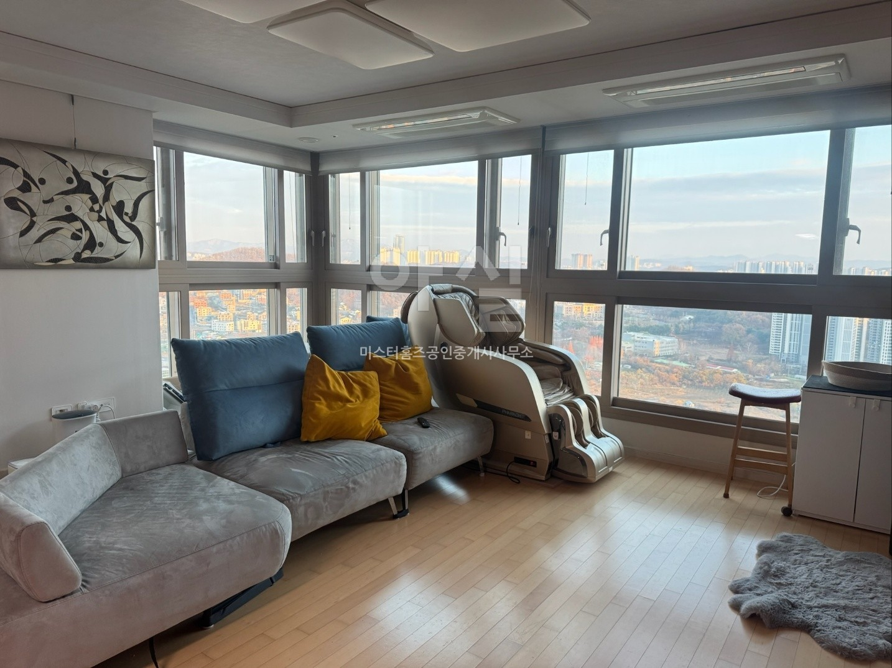
해당 매물 사진4클러스터 47타입 놓치지 아까운 트라팰리스 조망 전망 최고 라인
최신 로얄동 5클러스터 남동향47타입 지중해뷰. 정문 커뮤니티 이용편리
4클러스터 41타입 남동향 시원한 중앙공원 뷰 맞통풍구조 등하교 편리
정문 인근 상권 이용 진출입 편리한 1클러스터 47타입
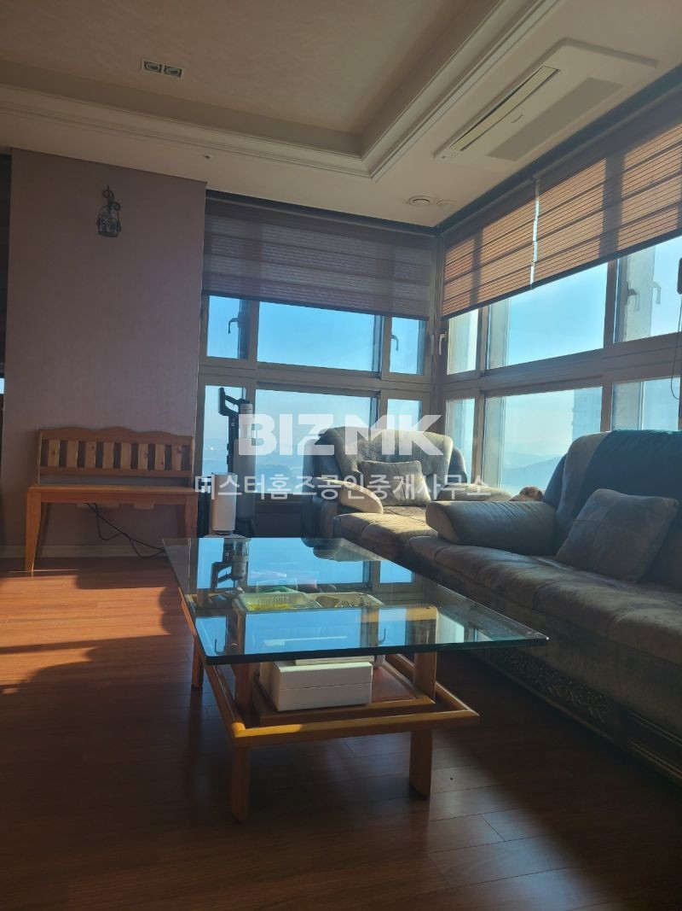
해당 매물 사진2클러스터 47타입 보증금 4.9억 27년 6월경 실 입주 가능
최신 로얄동 5클러스터 32타입 센터커뮤니티 이용 편리
5클러스터의 품격과 여유로운 대형 라이프 47탸입
햇살 아래 세련된 공간 리모델링 완 풀 에어컨 4클러스터 41타입
단지 내 중앙공원 조망과 따스한 남서향 4클러스터 47타입
1클러스터 47타입 정문 진출입 및 상가 이용 편리한 생활환경
아이 키우기 좋은 학세권동 4클러스터 32타입 막힘없이 탁 트인 뷰
4클러스터 전면동 30타입 4베이구조 남동향 탕정중 학사 뷰 풀에어컨
반세권 트라팰리스 단지의 심장, 가장 프리미엄한 입지 3클러스터 58타입
탁 트인 넓은 거실 가득 채우는 햇살 3클러스터 44타입
추천 트라팰리스 센트럴파크 잔디광장, 생태계류원 뷰 2클러스터 41타입
학세권동 4클러스터 34타입 아늑하고 쾌적한 생활환경
2클러스터의 쾌적함과 편안함이 어우러진 곳 선호도 높은 34타입
학세권동 4클러스터 매일이 행복해지는 넓은 거실 남서향 34타입
생활하기 편한 단지 중심 3클러스터 43타입 햇살 좋은 안락한 뷰
조용하고 쾌적한 2클러스터 남동향 채광, 전망 모두 좋은 41타입
5클러스터 41타입 선호 평수 햇살 좋은 남동향 협의입주
503동 2호라인 40타입 중앙공원뷰 전망 좋고 햇살 좋은 집
아이 키우기 좋은 4클러스터 32타입 일조량 풍부 편안한 뷰 라인
협의입주 아이 키우기 좋은 4클러스터 32타입 평면, 수납공간 굿
401동 4호라인 남동향 41타입 중앙공원 사계절 뷰 명품 학세권
4클러스터 47타입 탁 트인 마운트뷰 프라이버시 중요한 분께 추천
시원하게 열린 탁 트인 뻥뷰와 차분한 일상 4클러스터 32타입
4클러스터 32타입 초중고 등하교 편리 자녀 키우시는 가정에 추천
층간소음 걱정없이 마음껏 뛰어놀 수 있는 집 5클러스터 47타입
4클러스터 47타입 놓치지 아까운 트라팰리스 조망 전망 최고 라인
아이들이 자유롭게 꿈꾸는 필로티 대형 2면개방 타워형 5클러스터 47타입
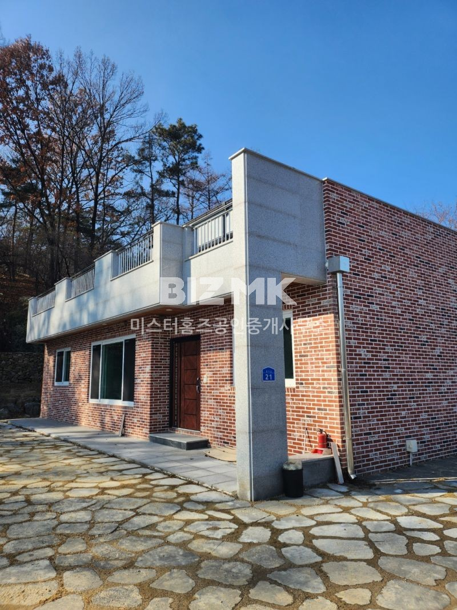
해당 매물 사진인프라는 신도시급, 환경은 청정구역, 배방생활권 단독주택 매매
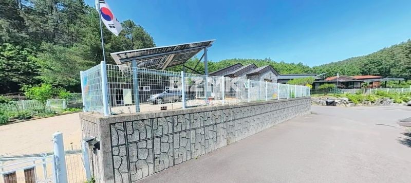
해당 매물 사진북면 성장관리계획구역단독주택
북천안 IC 인근 신축급 공장. 까치발 유, 태양광 수입 발생 가능
자연 속 희소가치 높은 대형 부지 귀농귀촌, 산림휴양 및 사업용 토지
삼성배후 탕정원도심 핵심입지 대지 넓은 투자형 상가
세종로 대로변 가시성 최상 쇼룸사무실소형창고 추천
아산 음봉 대로변 1층 임대 현 공실, 렌트프리 제공 창고,식당,쇼룸
탕정2신도시가 품은 금싸라기 토지 미래가치가 눈 앞에 보입니다
세종로 대로변 압도적 가시성 대형식당식자재마트 추천
호수공원 산책하고 상가 수익도 올리는 삶, 가능합니다.
서울이 약 40분대 제2경부고속도로가 뚫리는 천안의 마지막 저평가 투자처
천안 역세권 도시재생과 GTX 호재의 중심 원도심의 부활 성정동 선점기회
탁 트인 리버뷰와 풍부한 힐링수요를 품은 2층 알짜상가 임대
4클러스터 41타입 보증금 4억 전세 안고 투자할 우량매물
학세권동 4클러스터 로얄입지 수납 최상 남동향 41타입
보증금 4억 5,000만원 전세 안고 투자할 우량 매물
보증금 4.3억. 세입자 인수조건 28년 2월경 실입주 가능
탁 트인 학교 전망과 화사한 남동향 햇살 4클러스터 30타입
3클러스터 펜트하우스급 66타입 인테리어 완 햇살 좋은 지중해마을 뷰
보증금 5,000만원, 월 150만원 안정적인 임대수익형 매물
생활 편리한 단지 중심 3클러스터 44타입 남동향 탁 트인 편안한 뷰
2클러스터 50타입 중앙잔디광장, 설화산과 온양도심이 환히 보이는 뷰맛집
은은한 상쾌함과 알찬 실속을 갖춘 집 3클러스터 34타입
2클러스터 32타입 보증금 3억 승계 27년 입주가능 소액투자 추천
4클러스터 30타입 현 임차인 거주 중 안정적인 임대수익형 매물
5클러스터 41타입 보증금 4.8억 전세 안고 투자할 우량매물
2클러스터 29타입 보증금 2.6억 전세 승계로 실 투자금 5,000만원
2클러스터 29타입 현재 보증금 2.1억 들어있는 알짜매물
4클러스터 47타입 보증금 4.5억 28년 5월경 실입주 가능
따스한 오후 햇살이 머무는 대형의 여유 풀에어컨 교체 3클러스터 58타입
두 창 가득 은은한 빛이 물드는 2면개방 뻥뷰 2클러스터 32타입
보증금 3,000만, 월 150만. 안정적인 임대수익형 매물
임차인 승계 매매 현재 보증금 3억 400만 들어있는 알짜 매물
즉시입주 가능 아침 햇살이 스미는 4Bay 대형 3클러스터 44타입
보증금 4.6억. 실 투자금 7,000만원. 28년 12월경 실입주 가능
푸른 중앙공원 조망과 따스한 남서향 5클러스터 32타입
막힘없이 탁 트인 뷰 맛집 2클러스터 2면개방 여유로운 대형 47타입
푸른 잔디광장을 품은 힐링 조망 1클러스터 34타입
1클러스터 32타입 로얄층 GWP파크 뷰 세입자 승계 매매
탕정 계획관리지역 나대지 다가구주택, 근생건물, 창고, 주차장 추천
탕정 계획관리지역 나대지 다가구주택, 근생건물, 창고, 주차장 추천
청수지구 청수로 도로변 상가주택용지
탕정신도시 2층 상가 쇼룸, 전시장, 판매장에 최적
삼성의 심장 탕정 실패없는 1등 브랜드 역전할머니맥주를 소유하십시오
서부내륙고속도로 신창IC 개통예정, KTX서해선 도고온천지구 상업용지
청수행정타운 법조단지 주거지역 주택용지
도고온천권 상업지역 토지 근생, 상가, 카페, 숙박 개발 가능
청수택지지구 청수고등학교 주거전용 단독주택용지
청수 가온중학교 인근 먹자골목 상가주택용지
삼성 개발호재 탕정 계획관리지역 나대지
서부내륙고속도로 신창IC 개통예정, KTX서해선 도고온천지구 상업용지
아산의 산토리니. 지중해마을의 주인공이 될 마지막 기회
서부내륙고속도로 신창IC 개통예정, KTX서해선 도고온천지구 상업용지
아산 둔포 운용리 희소 소형 대지 매매 평택 둔포생활권 접근성 기대
청수행정타운 호수공원 먹자골목
삼거리 알짜 공장 임대. 입지 양호 접근성 뛰어난 신축건물
한들물빛도시 시티프라디움 앞 상가주택용지
탕정신도시 탕정역 도보 근접 상가주택용지
탕정 한들물빛도시 상가주택용지
탕정신도시 곡교천변 카페거리 상가주택용지
탕정신도시 탕정역 도보권 코너 상가주택용지
단지·거래 종류·검색어를 바꿔 다시 살펴보세요.
네이버에서 확인한 전체 등록 매물 395건입니다. 같은 집이 다른 매물 번호로 등록된 경우 각각 표시됩니다. 가격과 거래 상태는 자동 갱신되지 않으므로 상담 전 원문을 확인해 주세요.